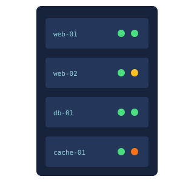

Web Servers: How Websites Reach Your Screen
Every time a website opens, a web server is working behind the scenes to deliver it. This site explains what web servers are, how they work, where they came from, and how they are kept fast and secure.

Abstract
Web servers are one of the most important parts of the internet. A web server stores the files that make up a website and sends them to any browser that asks for them, using a set of rules called HTTP. Web servers can be physical computers in a data center or virtual machines rented from a cloud provider, and together they handle billions of requests every day.
This project covers the basics of how web servers work, their history from the first server at CERN in 1990 to today’s cloud and edge networks, the most popular server software (Nginx and Apache), and the security and performance techniques IT teams use to keep servers running. Because web servers are always connected to the internet, they are a constant target for attackers, which makes them an important topic for anyone studying cybersecurity.
Key Terms
Table of Contents
-
Web Server Basics
What a web server is, hardware vs. software, static vs. dynamic, and how a page request works step by step.
-
History of Web Servers
From Tim Berners-Lee’s first server at CERN to the cloud and edge computing.
-
Web Server Software
Nginx, Apache, IIS and others, plus who uses what in 2025.
-
Security & Speed
How web servers get attacked, how they are protected, and how they are made faster.
-
Key Concepts
Seven core ideas you need to understand web servers.
-
References & Resources
Sources used for this project and good places to keep learning.
-
About
About me and about this project.